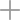

Вопрос-ответ
Основные сведения
- Общие вопросы
- Поступление
- Проживание
- Образовательная программа
Поступление
Здравствуйте. Какая необходима форма медицинской справки для прохождения просмотра?
Баев Денис Андреевич 28.04.2023

Уважаемый Максим Владимирович, в данный момент просмотр кандидатов 2010 г. р. на поступление в УОР № 5 «Мастер-Сатурн» проводится в индивидуальном порядке по предварительному согласованию с тренером. Телефон тренера команды 2010 г. р.: +7(913)610-38-18, Андрей Станиславович Свидзинский.
Основные сведения
Структура и органы управления образовательной организацией
Документы
Образование
Образовательные стандарты
Материально-техническое обеспечение и оснащённость образовательного процесса
Спорт
Финансово-хозяйственная деятельность
Противодействие коррупции
Доступная среда
Коллектив училища
Логотип
Гимн
Онлайн-тур
Контакты